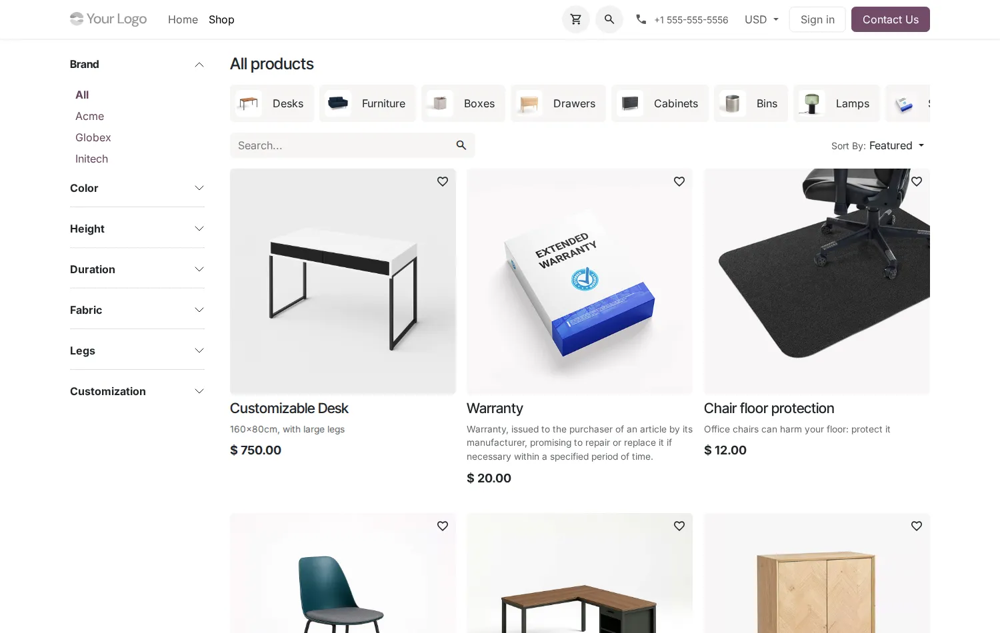
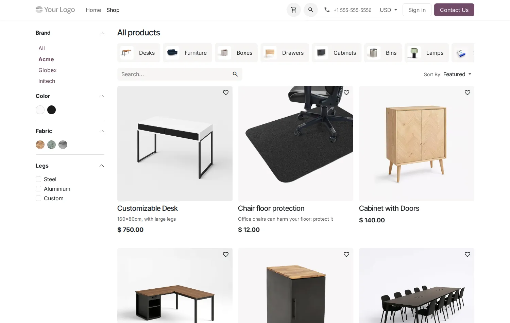

Brand Filter for Website Shop - Product Brand
Website brand filter for the eCommerce shop: define product brands, assign them to products and let customers filter the shop by brand.
- Price
- $9.99
- Odoo versions
- 16.0
- 17.0
- 18.0
- 19.0
- 20.0
- Technical name
tamadoo_website_brand_filter- License
- OPL-1
Odoo 20.0: not listed on the store yet. Ask at tama.odoo@gmail.com.

Text and screenshots below are from the Odoo 20.0 version of this module.
Let shoppers filter your eCommerce catalog by brand.
What it does
Adds a Brand filter to your shop sidebar — just like categories and attributes. Define brands, assign one to each product, and customers can browse by brand.
- Brand model: name, image, description, company scope.
- Brand field on every product.
- Collapsible Brand filter in the shop left sidebar (Customize-toggleable).
- "All" link clears the brand filter while keeping other active filters.
- Integrated with shop search; multi-company aware. Zero JS — pure QWeb & Python.
How to use
1. The Brand filter in your shop sidebar

2. Click a brand to filter
Only that brand's products remain; the selected brand is highlighted.

Requirements
- Odoo 20 — eCommerce (
website_sale).
Tamadoo · tama.odoo@gmail.com
Get Brand Filter for Website Shop
Odoo 20.0: not listed on the store yet. Ask at tama.odoo@gmail.com.
Questions before buying? Write to tama.odoo@gmail.com.